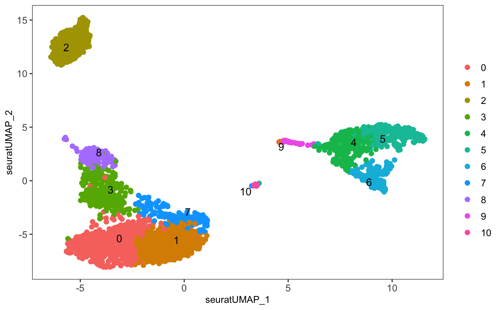

Differential Expression
Yichen Wang
Source:vignettes/differential_expression.Rmd
differential_expression.RmdIntroduction
For this section, we provide wrappers of four methods, listed in the table below. All functions takes an input SingleCellExperiment (SCE) object and other settings as arguments and returns the same SCE object with results updated in metadata slot.
| Method | Citation | Function |
|---|---|---|
| MAST | Greg Finak and et al., 2015 | runMAST() |
| Limma | Gordon Smyth and et al., 2004 | runLimmaDE() |
| DESeq2 | Michael Love and et al., 2014 | runDESeq2() |
| ANOVA | Jeffrey T. Leek and et al., 2020 | runANOVA() |
A generic wrapper of all four methods is also provided, called runDEAnalysis().
Workflow
The differential expression analysis can be easily performed on any preprocessed SCE dataset. Here we introduce the workflow of using the generic wrapper runDEAnalysis().
Parameters
The most basic parameters include:
- The input SCE object -
inSCE. - The method listed in the table above to use -
method. - The assay to perform the analysis on -
useAssay
Besides these, there are also a few other required parameter sets:
Conditions
The R script functions we have allow users to perform differential expression analysis with relatively flexible condition setting. In terms of the condition of interests and the condition for control, comparison groups can be set by giving either one or more categories under a column in colData, or a prepared index vector as long as the indices are able to subset the input SCE object.
Additionally, only specifying the condition of interests is allowed and the control will then be set to all the other cells, which turns to a biomarker finding analysis.
Since the conditions can be set by using indices or annotations, we have two groups of parameters listed below. Note that only one way of setting can be used at one time.
- Use
index1andindex2for index style setting - Use
classto specify the annotation vector by either directly giving a vector of proper length or giving a column name ofcolData. Then useclassGroup1,classGroup2to specify which categories inclassare of interests.
Namings
Something that might be special in our workflow is that, users will be required to specify name strings for:
- The group of interests -
groupName1. - The group of control -
groupName2. - The analysis run itself -
analysisName.
The reason is we assume that users are likely to perform multiple batches of analysis for a single dataset (e.g. group1 Vs. group2 and then group1 Vs. group3), and we hope to have everything stored in one SCE without leaving users any confusion when they look back on it. Also, the namings are also used by DE analysis related plotting functions, so that legends can be well annotated.
Example
Preprocessing
To demonstrate a simple and clear example, here we use the “PBMC-3k” dataset from “10X” which can be easily imported with SCTK functions. The preprocessing only includes necessary steps to get cluster labels (i.e. QC and filtering are excluded).
library(singleCellTK) pbmc3k <- importExampleData("pbmc3k") pbmc3k <- scater_logNormCounts(pbmc3k, "logcounts") # Go through the Seurat curated workflow to get basic clusters pbmc3k <- seuratNormalizeData(inSCE = pbmc3k, useAssay = "counts") pbmc3k <- seuratFindHVG(inSCE = pbmc3k, useAssay = "seuratNormData") pbmc3k <- seuratScaleData(inSCE = pbmc3k, useAssay = "seuratNormData") pbmc3k <- seuratPCA(inSCE = pbmc3k, useAssay = "seuratScaledData") pbmc3k <- seuratRunUMAP(pbmc3k) pbmc3k <- seuratFindClusters(inSCE = pbmc3k, useAssay = "seuratScaledData") # Optional visualization plotSCEDimReduceColData(inSCE = pbmc3k, colorBy = "Seurat_louvain_Resolution0.8", conditionClass = "factor", reducedDimName = "seuratUMAP")

Run Differential Expression Analysis
# Condition chosen basing on the UMAP pbmc3k <- runDEAnalysis(inSCE = pbmc3k, method = "MAST", useAssay = "logcounts", class = "Seurat_louvain_Resolution0.8", classGroup1 = c(2), classGroup2 = c(4, 5), groupName1 = "c2", groupName2 = "c4_c5", analysisName = "c2_VS_c4_c5")
Results
The results are saved in the metadata slot of the returned SCE object, following the structure below:
matadata(pbmc3k)
|- $info1
|- $info2
|- ...
|- $diffExp
|-$AnalysisName1
|-$AnalysisName2
|-...
|-$c2_VS_c3_c8
|-$useAssay = "logcounts"
|-$groupNames = c("c2", "c3_c8")
|-$select
| |-$ix1 = c(FALSE, TRUE, FALSE, ...)
| |-$ix2 = c(FALSE, FALSE, FALSE, ...)
|
| (Two logical vectors both having `ncol(inSCE)` values,
| specifies which cells are selected for "c2" or "c3_c8")
|
|-$annotation = "Seurat_louvain_Resolution0.8"
|-$result = (the `data.frame` of top DEG table, shown below)
|-$method = "MAST"To fetch the result as a table of the Top differential expressed genes and the statistics:
DEG <- metadata(pbmc3k)$diffExp$c2_VS_c4_c5$result head(DEG)
| Gene | Pvalue | Log2_FC | FDR |
|---|---|---|---|
| FTL | 0 | -3.202606 | 0 |
| LYZ | 0 | -4.896037 | 0 |
| FTH1 | 0 | -2.750537 | 0 |
| S100A4 | 0 | -3.673227 | 0 |
| TYROBP | 0 | -3.532855 | 0 |
| CST3 | 0 | -3.612471 | 0 |
To visualize the result in a heatmap:
plotDEGHeatmap(pbmc3k, useResult = "c2_VS_c4_c5", log2fcThreshold = 1)

For other approaches of visualizing top differential expressed genes, refer to plotDEGRegression() and plotDEGViolin(), which are borrowed from MAST’s tutorial.